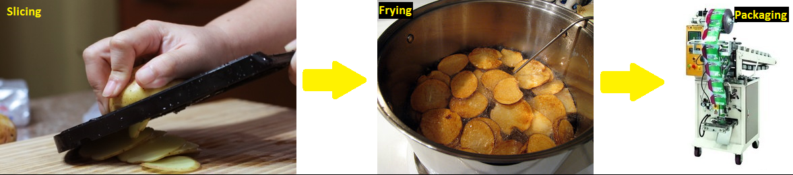

Operations research is a scientific approach that attempts to apply mathematical methods and the capabilities of modern computers to the difficult and unstructured problems confronting modern managers. Mathematical programming is a branch of management science. It is concerned with finding the optimum allocation of limited resources among competing activities, under a set of constraints imposed by the nature of the problem being studied. A particular type of mathematical programming, linear programming (LP) is a widely used model type made up from linear equations and linear inequalities. The feasible decisions are compared using a linear objective function that depends on the decision variables.
A company produces plain and mexican chips. The chips have to go through three processes: slicing, frying, and packing.
The time required by each type of chips for each process is presented in Table 1. There is a limit on the amount of time available for each process (Table 2).The sell price of the chips is presented in Table 3. You want to determine what combination of chips to produce in order to yeld the highest profit possible.
How to solve the chips problem| Slicing(min) | Frying(min) | |
| plain | ||
| mexican |
| Available slicing time | |
| Available frying time |
| Sell price(euro) | |
| plain | |
| mexican |